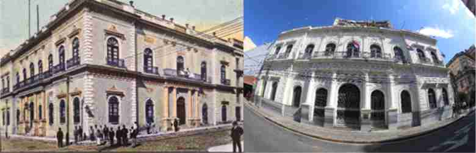

El edificio fue construido para la residencia de Benigno López Carrillo, uno de los hijos del entonces presidente de la República, Don Carlos Antonio López y Juana Pabla Carrillo. El arquitecto italiano Alessandro Ravizza, conocido como el Arquitecto de los López, fue entonces contratado para realizar el diseño y construcción de dicho palacio en los años 1861-1865.
En el año 1868 la señora Juana P. Carrillo se presentó ante el Juzgado como heredera de su hijo Benigno, fusilado en Lomas Valentinas, luego en 1871, al fallecer la señora Juana Pabla Carrillo, la propiedad la heredan sus hijas Inocencia y Rafaela López Carrillo.
Al finalizar la Guerra contra la Triple Alianza, la vivienda tiene varios y sucesivos dueños. En el año 1881 lo arrienda el catalán Pedro Grau quien junto a su hermano lo convierte en el Hotel Hispano-Americano. A principios del siglo XX el hotel contaba con 72 habitaciones, salones para banquetes y hasta luz eléctrica, teléfonos y ventiladores.
Durante la Guerra del Chaco, el edificio funcionó como Hospital de Sangre.
La propiedad vuelve a ser vendida, y pasa a tener diferentes dueños a través del tiempo, hasta que en el año 2003 el Banco de Asunción, quien fuera su propietario en ese entonces, solicita su liquidación voluntaria al Banco Central del Paraguay y lo vende al Estado Paraguayo que lo adquiere a través de una donación del Gobierno de Taiwán. El gobierno lo destina a ser la nueva sede del Ministerio de Relaciones Exteriores, inaugurado el 6 de mayo del año 2005.
Desde el punto de vista arquitectónico el edificio corresponde al estilo neoclásico, el cual fue el estilo más representativo de la arquitectura durante el gobierno del presidente Carlos A. López. Los ambientes o espacios importantes se abren a un patio central. Allí se observa, la galería de la planta alta con arcos de medio punto. En la fachada de planta baja se aprecian columnas de orden dórico, en la planta alta pilastras de orden corinto. En los balcones de la planta alta se observan la utilización de rejas de hierro fundido con diseños de filigrana.
La estructura del edificio está delimitada por 30 columnas y los arcos de medio punto ricamente ornamentados. La importante escalera interna, posee barandas de herrería artística. Los zócalos de fachada y las bases de columnas de acceso y patio central fueron revestidos con planchas de mármol, realizándose el mismo tratamiento en los pisos, escalera de acceso principal y en las de acceso a la planta alta. Los pisos y revestimientos de mármol fueron traídos de Europa. Las rejas de la escalera y balcones externos que cuenta el edificio, fueron trabajados en la Fundición La Rosada-Ybycuí.